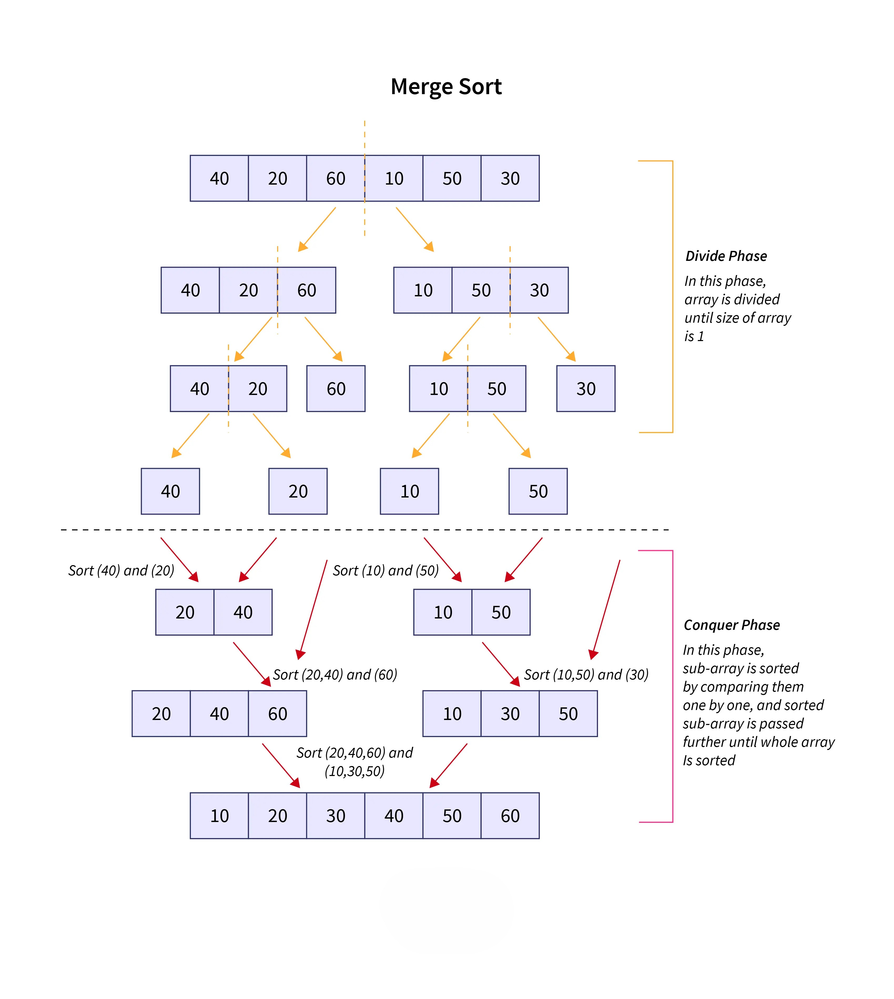

Sorting Algorithms
Almost every action you take in a web app relies on sorted data. Just looking up a user's profile in a database likely relies on a sorted index
Fortunately, most programming languages provide their own standard sorting implementation. In Python, for example, we can use the sorted function:
Bubble Sort
if the standard sorted() function exists, why should we learn to write a sorting algorithm from scratch?
In all seriousness, in this we'll be building some of the most famous sorting algorithms from scratch because:
- It's good to understand how they work under the hood
- It's great algorithmic thinking practice
Bubble sort is the sorting algorithm that everyone learns but no one actually uses in the real world — because it's so slow. We learn it because it's easy to understand. And once we appreciate how slow it is, the other sorting algorithms are just that much more impressive.
Working
It all starts with an unsorted list of numbers. Then we loop from left to right and compare each pair of neighbouring numbers. If the number on the right is smaller than the number on the left, we swap them. Otherwise, we leave them alone.
When we get to the end, we go back to the start and do it again. We repeat this over and over until we complete a full pass from left to right without making a single swap — at that point, the list is sorted.
Let's walk through a concrete example with [5, 3, 8, 1, 6].
Notice what happened — the largest number, 8, got pushed all the way to the right in just one pass. Like a bubble rising to the surface. That's where the name comes from.
Pass 2, Pass 3... keep happening until a full pass produces zero swaps. At that point the algorithm knows it's done.
The key insight is this — in the worst case, for every single item in the list, you might have to loop over the entire list again. A loop inside a loop. That's O(n²) — and it's why bubble sort falls apart the moment your data gets large.
Bubble sort repeatedly steps through a slice and compares adjacent elements, swapping them if they are out of order. It continues to loop over the slice until the whole list is completely sorted. Here's the pseudocode:
Pseudocode 🧠
-
Set
swappingto True -
Set
endto the length of the input list -
While
swappingis True:-
Set
swappingto False -
For i from the 2nd element to end:
-
If the
(i-1)thelement of the input list is greater than theithelement:a. Swap the
(i-1)thelement and theithelement
b. Setswappingto True
-
-
Decrement
endby one
-
-
Return the sorted list
Try to Create the bubble_sort algorithm according to the described Pseudocode above.
Reveal: bubble_sort
Best and Worst Case
In the case of bubble sort, the best and worst case scenarios can actually change the time complexity:
- Best case: If the data is pre-sorted, bubble sort becomes really fast. Because it only need to do one pass
- Worst case: If the data is in reverse order, bubble sort becomes really slow (but still in the same complexity class as random data). Because every comparison leads to a swap, resulting in the maximum number of operations (O(n²)).
Why Bubble Sort
Bubble sort is famous for how easy it is to write and understand.
However, it's one of the slowest sorting algorithms, and as a result is almost never used in practice. That said, we covered it because it's a useful thought exercise so that you can appreciate why the more complex and performant algorithms are better.
Merge Sort
Merge sort is a recursive sorting algorithm and it's quite a bit faster than bubble sort. It's a divide and conquer algorithm.:
- Divide: divide the large problem into smaller problems, and recursively solve the smaller problems
- Conquer: Combine the results of the smaller problems to solve the large problem
In merge sort we:
- Divide the array into two (equal) halves (divide)
- Recursively sort the two halves
- Merge the two halves to form a sorted array (conquer)
Merge sort is much more efficient than bubble sort. In Big O terms it's O(n log n) — compared to bubble sort's shameful O(n²), that's a massive improvement. And O(n log n) is actually about as good as it gets for sorting a fully unsorted list.
But before we get carried away — merge sort isn't perfect. A few honest trade-offs:
- It needs extra memory. It makes copies of the list to work with, so it uses more RAM than an algorithm that sorts the list in place.
- It's actually slower than simpler algorithms like insertion sort on small lists — because all that memory copying, allocation, and recursive function calling has a constant cost. It doesn't affect the Big O category, but it shows up in real performance, and it hurts more on smaller inputs.
So merge sort wins at scale. For small lists, something simpler might actually beat it in practice.
Working
Merge sort is a divide and conquer algorithm. It has two phases — split, then merge.
Phase 1 — Split: Take your unsorted list. Cut it in half. Take each half and cut those in half. Keep going recursively until every piece has just one item. A list of one item is already sorted — there's nothing to compare.
Phase 2 — Merge: Now work back up. Take two single-item lists and merge them into a sorted two-item list. Take two two-item lists and merge them into a sorted four-item list. Keep going until you're back to one fully sorted list.
The merge step itself is simple — look at the first item in both lists, pick the smaller one, move it into the new sorted list, and advance. Repeat until both lists are empty.

The algorithm consists of two separate functions, merge_sort() and merge():
-
merge_sort()divides the input array into two halves, calls itself on each half, and then merges the two sorted halves back together in order. -
The
merge()function merges two already sorted lists back into a single sorted list. At the lowest level of recursion, the two "sorted" lists will each only have one element. Those single element lists will be merged into a sorted list of length two, and we can build from there.
In other words, all the "real" sorting happens in the merge() function.
Pseudocode 🧠
merge_sort()
Input: A, an unsorted list of integers
-
If the length of
Ais less than 2, it's already sorted so return it -
Split the input array into two halves down the middle
-
Call
merge_sort()twice, once on each half -
Return the result of calling
merge(sorted_left_side, sorted_right_side)on the results of themerge_sort()calls
merge ()
Inputs: A and B. Two sorted lists of integers
-
Create a new final list of integers
-
Set
iandjequal to zero. They will be used to keep track of indexes in the input lists (AandB) -
Use a loop to compare the current elements of
AandB: -
If an element in
Ais less than or equal to its respective element inB, add it to the final list and incrementi -
Otherwise, add the item in
Bto the final list and incrementj -
Continue until all items from one of the lists have been added
-
After comparing all the items, there may be some items left over in either
AorB. Add those extra items to the final list -
Return the final list
Try to Create merge_sort() & merge() algorithms according to the described Pseudocode above.
Reveal: merge_sort
Reveal: merge
def merge(first, second):
result = []
i = j = 0
while i < len(first) and j < len(second):
if first[i] <= second[j]:
result.append(first[i])
i += 1
else:
result.append(second[j])
j += 1
while i < len(first):
result.append(first[i])
i += 1
while j < len(second):
result.append(second[j])
j += 1
return result
Big O
Two things are happening:
- The splitting takes O(log n) levels — same reason binary search does. Every level halves the list.
- At each level, every single item in the list gets looked at once during the merge step — that's O(n).
Multiply them together: O(n log n).
Best and Worst Case
In the case of merge sort, the best and worst case scenarios do not change the time complexity:
-
Best case: Even if the data is already sorted, merge sort still divides the list and merges it back. Because it always performs the same number of splits and merges, the time complexity remains O(n log n)
-
Worst case: Even if the data is in reverse order, merge sort still performs the same sequence of operations. Because the algorithm does not depend on the initial order of data, the time complexity remains O(n log n)
Why Merge Sort
Pros:
-
Fast: Merge sort is much faster than bubble sort. O(n*log(n)) instead of O(n^2).
-
Stable: Merge sort is a stable sort which means that values with duplicate keys in the original list will be in the same order in the sorted list.
Cons:
-
Memory usage: Most sorting algorithms can be performed using a single copy of the original array. Merge sort requires extra subarrays in memory.
-
Recursive: Merge sort requires many recursive function calls, and in many languages (like Python), this can incur a performance penalty.
Insertion Sort
Insertion sort is interesting — on paper it looks bad, but it has a real-world niche that keeps it alive.
In the average case it's O(n²), same shameful category as bubble sort. But two situations make it genuinely useful in practice:
- The data is already mostly sorted
- The data set is very small
Real world
Some sorting libraries switch to insertion sort automatically when the dataset is small enough, then fall back to a faster algorithm for larger sets.
Working
We start with an unsorted list of numbers. We iterate over each position from left to right, and we keep track of two indexes — i and j.
i is the current position we're on. j starts at that same position, but it moves to the left. Because this is a look-back algorithm, we can skip the first index entirely — a single item is already sorted. So both i and j start at index 1, the second position.
Now, the actual swapping happens between the number at j and the number at j - 1. i has nothing to do with the swapping — it just keeps our place in the algorithm.
So we look at arr[j] and arr[j - 1]. If they're out of order (means arr[j - 1] > arr[j]), we swap them and move j one step to the left. If they're already in order, we leave them alone, increment i, and reset j back to where i is.
Near the start of the list, j barely has to backtrack at all — maybe one or two steps. But as i gets larger and larger, j could potentially slide all the way back to the beginning. That's where the O(n²) cost creeps in.
And here's the key insight about why it shines on nearly-sorted data — if every element is already close to where it belongs, j almost never has to move left. Each pass is basically one comparison and done. The algorithm just glides through the list. That's why it beats merge sort in that specific case, even though merge sort wins everywhere else at scale.
Let's walk through a concrete example with [5, 3, 8, 1, 6].
The step message tells you exactly what i and j are doing at each moment — watch how j slides left when it finds something out of order, and snaps back to i when the pair is already in place. On nearly-sorted data you'll see j barely move at all. That's why it's fast in that specific case.
Pseudocode 🧠
-
For each index
ifrom0to the length of the list: -
Set
jtoi -
While
jis greater than0and the element at indexj-1is greater than the element at indexj:-
Swap the elements at indices
j-1andj -
Decrement
jby1
-
-
Return the list
Try to Create insertion_sort() algorithm according to the described Pseudocode above.
Reveal: insertion_sort
Big O
Insertion sort has a Big O of O(n^2), because that is its worst case complexity.
The outer loop of insertion sort always executes n times, while the inner loop depends on the input:
- Best case: If the data is pre-sorted, insertion sort becomes really fast. Because we just need to check every element once.
- Average case: The average case is O(n^2) because the inner loop will execute about half of the time.
- Worst case: If the data is in reverse order, it's still O(n^2) and the inner loop will execute every time.
Why Use Insertion Sort
- Fast: for very small data sets (even faster than merge sort and quick sort, which we'll cover later)
- Adaptive: Faster for partially sorted data sets
- Stable: Does not change the relative order of elements with equal keys
- In-Place: Only requires a constant amount of memory
- Inline: Can sort a list as it receives it
Why Is Insertion Sort Fast for Small Lists
Many production sorting implementations use insertion sort for very small inputs under a certain threshold (very small, like 10-ish), and switch to something like quicksort for larger inputs. They use insertion sort because:
- There is no recursion overhead
- It has a tiny memory footprint
- It's a stable sort as described above
Quick sort
Quicksort is fast, efficient, and actually used in the real world — unlike some algorithms we've covered. Looking at you, bubble sort.
It's a divide and conquer algorithm just like merge sort, and it technically has the same Big O complexity — O(n log n). But here's where it pulls ahead: it doesn't require nearly as much memory. It doesn't copy elements from sublist to sublist. It sorts the entire list in place. That's what makes it more performant in practice.
Working
We start with a random list of numbers. The first thing quicksort needs is a pivot — one number to act as the reference point. To keep things simple, we just pick the last element in the list.
Then we need two pointers — i and j.
jstarts at index 0 and walks forward through the list, comparing each element to the pivot.istarts at index -1 — not a real index yet, but it'll increment into index 0 on the first swap.
The rule is simple: look at arr[j]. If it's less than the pivot, increment i and swap arr[i] with arr[j]. If it's greater than or equal to the pivot, just move j forward and do nothing.
It feels slightly odd at first — we're comparing j to the pivot, but swapping i and j. Just hold that in your head.
By the time j has walked all the way through the list, everything at or to the left of i is smaller than the pivot, and everything to the right of i is larger. At that point, we swap arr[i + 1] with the pivot — and the pivot lands in its perfectly sorted final position. It will never move again.
That's one round of the partition function. To turn it into a full quicksort, we recursively call the same partition function on the left half and the right half, over and over, until the whole list is sorted.
Let's walk through a concrete example with [8, 3, 2, 9, 1, 7, 6, 10, 4, 5].
The dark side
Quicksort has one weakness. If you consistently pick the smallest or largest element as the pivot — say the data is already sorted — the partition step becomes useless. One side always has zero elements, the other has everything. That degrades to O(n²), effectively making it a bubble sort. Not a good look.
But this is easy to guard against:
- Check if the list is already sorted before running
- Shuffle the list randomly before sorting
- Pick the pivot at random instead of always using the last element
Optimised versions of quicksort are used everywhere in the real world — most standard library sorting implementations use it, at least partially.
Pseudocode 🧠
-
quick_sort(nums, low, high):-
If
lowis less thanhigh:-
Partition the input list using the
partitionfunction and store the returned "middle" index -
Recursively call
quick_sorton the left side of the partition -
Recursively call
quick_sorton the right side of the partition
-
-
-
partition(nums, low, high):-
Set
pivotto the element at indexhigh -
Set
ito the index beforelow -
For each index (
j) fromlowtohigh - 1:-
If the element at index
jis less than thepivot:-
Increment
iby 1 -
Swap the element at index
iwith the element at indexj
-
-
-
Swap the element at index
i + 1with the element at indexhigh(the pivot's position) -
Return
i + 1(the pivot's new index)
-
Try to Create quick_sort() & partition() algorithms according to the described Pseudocode above.
Reveal: quick_sort
Reveal: partition
Big O
On average, quicksort has a Big O of O(n*log(n)). In the worst case, and assuming we don't take any steps to protect ourselves, it can degrade to O(n^2). partition() has a single for-loop that ranges from the lowest index to the highest index in the array. By itself, the partition() function is O(n). The overall complexity of quicksort is dependent on how many times partition() is called.
Worst case: The input is already sorted. An already sorted array results in the pivot being the largest or smallest element in the partition each time, meaning partition() is called a total of n times.
Best case: The pivot is the middle element of each sublist which results in log(n) calls to partition().
Why Use Quick Sort
Pros:
- Very fast: At least it is in the average case
- In-Place: Saves on memory, doesn't need to do a lot of copying and allocating
Cons:
- Typically unstable: changes the relative order of elements with equal keys
- Recursive: can incur a performance penalty in some implementations
- Pivot sensitivity: if the pivot is poorly chosen, it can lead to poor performance
All this said, quicksort is widely used in the real world because the trade-offs are often worth it. For example, it's a default in PostgreSQL, a popular open-source database.
Selection Sort
Selection sort is the algorithm that sounds smart in theory and then makes you cringe when you actually watch it run. The idea is elegant — always pick the smallest thing and put it first. The execution? It scans the entire remaining list every single time. Every. Single. Time.
It's O(n²) in all cases — best, average, worst. No lucky breaks. No early exits. It doesn't care if the list is already sorted. It will still check everything. Bubble sort at least has a best-case O(n). Selection sort doesn't even have that.
Still — it's worth understanding. It's simple, it sorts in place (no extra memory), and it makes a clean mental model for why O(n²) algorithms struggle at scale.
Working
We start with an unsorted list. The idea is to divide it into two parts — a sorted left section and an unsorted right section. At the beginning, the sorted section is empty.
We only need one pointer: smallest_idx — it keeps track of where the smallest element in the unsorted section lives.
The process for each pass:
- Assume the first element of the unsorted section is the minimum. Set
smallest_idxto its index. - Walk through the rest of the unsorted section with a
jpointer. - Whenever
arr[j] < arr[smallest_idx], updatesmallest_idx = j. - After
jhas scanned everything, swaparr[smallest_idx]with the first element of the unsorted section. - That element is now in its final sorted position. It will never move again.
Repeat this for every position from left to right. Each pass costs n, n-1, n-2... comparisons — which adds up to O(n²).
Let's walk through [5, 3, 8, 1, 9, 2].
Pseudocode 🧠
-
For each index:
-
Set
smallest_idxto the current index (of the outer loop) -
For each index from
i + 1to the end of the list:- If the number at the inner loop index is smaller than the number at
smallest_idx, setsmallest_idxto the inner loop index
- If the number at the inner loop index is smaller than the number at
-
Swap the number at the outer loop index with the number at
smallest_idx
-
-
Return the sorted list
Try to Create selection_sort() algorithm according to the described Pseudocode above.
Reveal: selection_sort
Big O
Selection sort has a Big O of O(n²) — always. There's no best case. No lucky break where it exits early. Even if the list is already perfectly sorted, it will still scan everything to "confirm" the minimum on every single pass.
The reason: for each of the n elements, we do a full scan of the remaining unsorted section — n-1, n-2, n-3... comparisons. Add those up and you get roughly n²/2 comparisons. Drop the constant, and you're left with O(n²).
Worst case: A reverse-sorted list. Every pass finds the minimum at the very end — maximum comparisons, every time.
Best case: Still O(n²). Yes, really. It doesn't matter. It checks anyway.
The one thing selection sort does save on: swaps. It performs at most n - 1 swaps — one per pass. Compare that to bubble sort, which can swap on every single comparison. So if swapping is expensive (say, writing to disk), selection sort has a niche edge.
Is Selection Sort Ever Worth It?
Pros:
- Minimal swaps: At most
n - 1swaps — useful when writes are expensive - In-place: No extra memory needed, no copying or allocating
- Simple to implement: Hard to get wrong, easy to reason about
Cons:
- Always O(n²): No best case. Doesn't adapt to nearly-sorted input at all
- Not stable: Equal elements can get reordered relative to each other
- Outclassed: Insertion sort is strictly better for small or nearly-sorted lists
Selection sort isn't used in production.